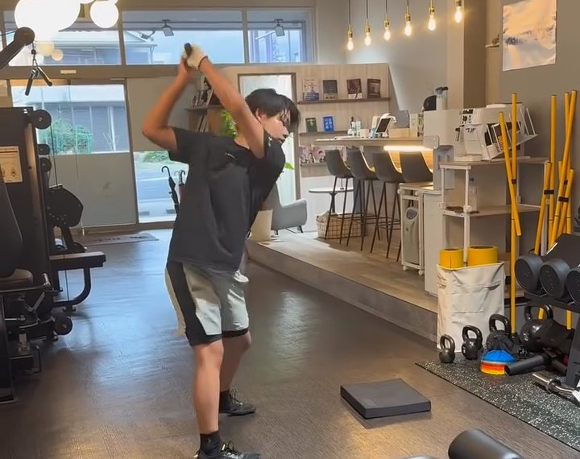

中学1年生・ドラコン（ゴルフ）
293→328ヤード
THE BANANAに来る前 → 今（どちらも非公式の計測）
- スイングスピード来る前 → 今
- 47.0 → 51.1 m/s
日本ドラコン選手権 マッチ49（2026年10月18日・水戸）のオープンディビジョンで、大人に混じって優勝（公式記録 321ヤード）。上のクラス（エクストリームディビジョン）への昇格を決めた
「最初と比べると、スイングスピードが徐々に上がっていっているのを実感しました。将来トップを目指していく学生のアスリートに、おすすめできます」
深澤 煌 選手